Landing pages
Una página clara para presentar tu negocio y recibir consultas.
- Diseño para celular y computador
- Botón de WhatsApp y formulario
- Dominio, hosting y SSL listos
Programador freelance · Viña del Mar
Diseño landing pages que te traen consultas y programo sistemas que ordenan tu trabajo diario: inventario, control de equipos, reservas o lo que tu empresa necesite. Hablas directo con quien programa.
01. Servicios
Desde una página para que te encuentren hasta un sistema completo con usuarios y base de datos.
Una página clara para presentar tu negocio y recibir consultas.
Software web hecho según cómo trabaja tu empresa.
Menos trabajo manual en lo que repites cada semana.
Tu sitio funcionando y al día después de la entrega.
02. Proyectos
Sistemas y sitios que he programado, desde el rubro de las fotocopiadoras hasta herramientas para el día a día.
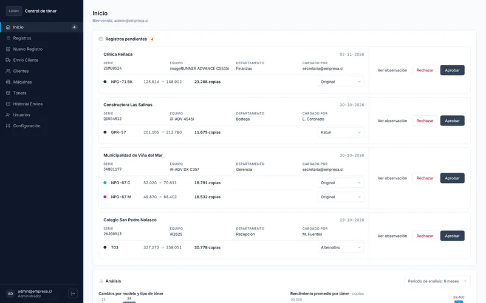
Registra clientes, equipos y cambios de tóner. Calcula cuánto rindió cada tóner con el contador, ordena las mantenciones del mes y exporta a Excel.
Catálogo de equipos y formulario de cotización que llega directo al correo, listo para publicarse con dominio propio y certificado SSL.
Script para Google Sheets que crea la planilla completa: gastos fijos y diarios, una casilla para marcar lo pagado y el saldo de fin de mes calculado solo.
03. Proyecto destacado
Un sistema web para empresas que arriendan y dan servicio a fotocopiadoras. Ordena los cambios de tóner, las guías de despacho y los envíos de cada mes, con accesos para administrador, secretaria y técnico.
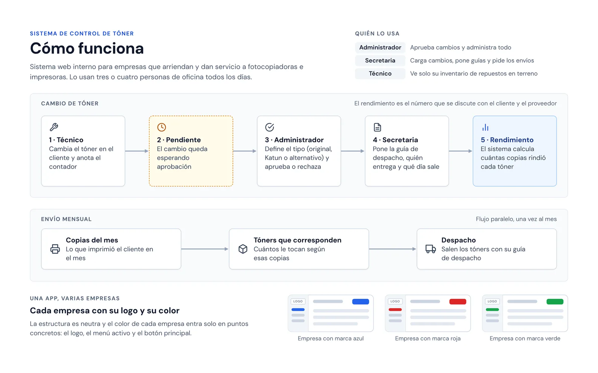
Ver en grande1 de 14
El recorrido de un cambio de tóner: el técnico anota el contador, el administrador lo aprueba, la secretaria pone la guía y el sistema calcula el rendimiento. Aparte, el envío mensual de tóners a cada cliente.
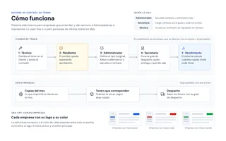
Cómo funciona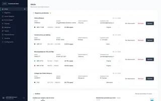
Inicio del administrador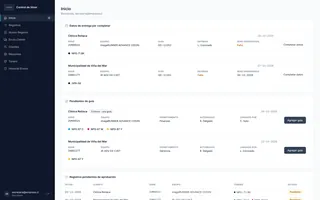
Inicio de la secretaria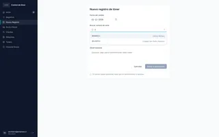
Nuevo registro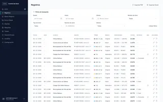
Registros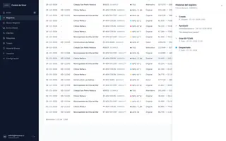
Historial de un registro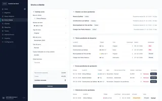
Envío a cliente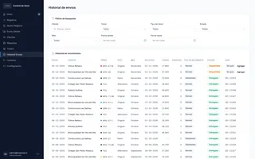
Historial de envíos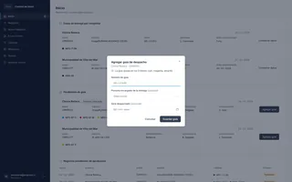
Guía de despacho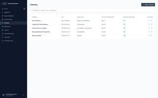
Clientes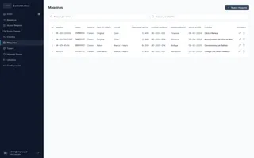
Máquinas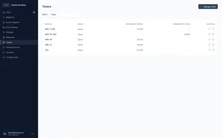
Toners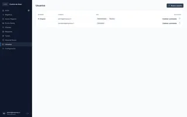
Usuarios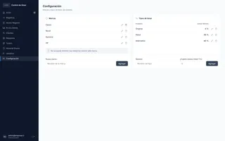
ConfiguraciónLas pantallas muestran datos de ejemplo.
El técnico anota el contador y el administrador aprueba el cambio y confirma si el tóner es original, Katun o alternativo.
Calcula cuántas copias rindió cada tóner y lo compara con lo que debería rendir según su tipo.
La secretaria agrega la guía de despacho, quién entrega y qué día sale. Una guía puede cubrir varios tóners.
Con las copias del mes calcula cuántos tóners le corresponden a cada cliente.
Te muestro el sistema funcionando y lo ajustamos a tu forma de trabajar. Se instala y se configura para cada empresa, por eso su código no es público.
04. Cómo trabajo
Me cuentas qué necesitas por WhatsApp o en una videollamada.
Te envío alcance, precio y plazo por escrito antes de partir.
Vas viendo avances y pides ajustes durante el proyecto.
Publico el sitio o sistema, te enseño a usarlo y sigo disponible.
06. Contacto
Cuéntame qué necesitas y te respondo con una propuesta sin costo. Si quieres ver cómo programo, mi código está en GitHub.